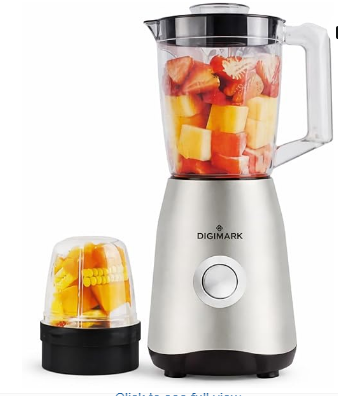

Power with Poise
1800 watts of ceramic-coated force gives you five blending levels, a turbo burst, and whisper-quiet refinement so the machine hums like a whispered promise.
Father’s Day Luxury Gifts
A bespoke countertop statement, engineered to commute from delicate purees to bold nut butters with silence and precision. The Ultra’s satin finish turns everyday prep into a couture ritual.
Current Price
R 3,699.00
Capacity
1.2 L / 1800 W
Delivery
Next-day (Cape Town / Johannesburg)

Scroll to awaken the Ultra’s kinetic bloom—each blend choreographed with slow-motion precision and dramatic lighting.
1800 watts of ceramic-coated force gives you five blending levels, a turbo burst, and whisper-quiet refinement so the machine hums like a whispered promise.
Satin-touch finish resists fingerprints, while the sculpted base anchors the blender on marble with ceremony. Every element is intentionally balanced for tactile delight.
Included: 1.2 L pitcher, travel cup, precision lid, and a magnetized tamper—styled to disappear into a premium kitchen drawer line.
Dedicated care line + complimentary calibration in the first 30 days. Because luxury is also about how the brand holds the product in hand.